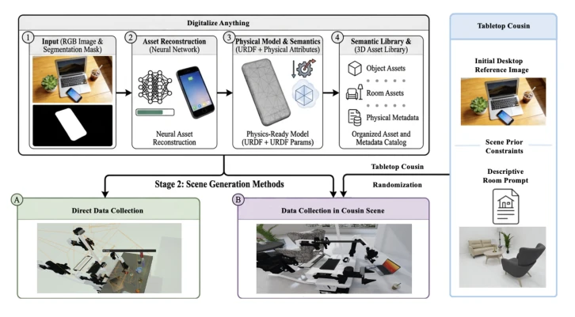
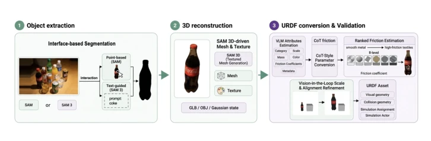
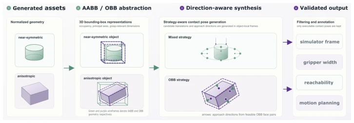
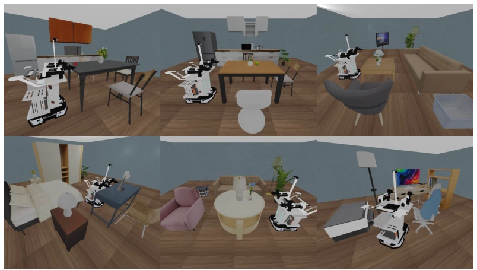
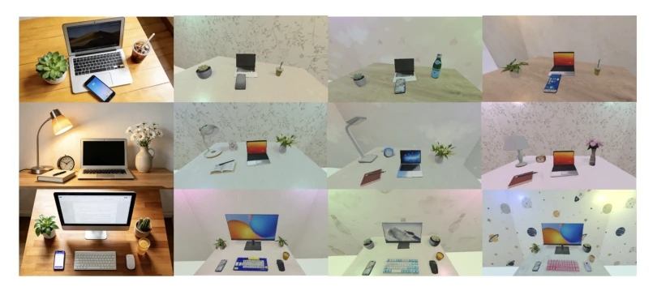
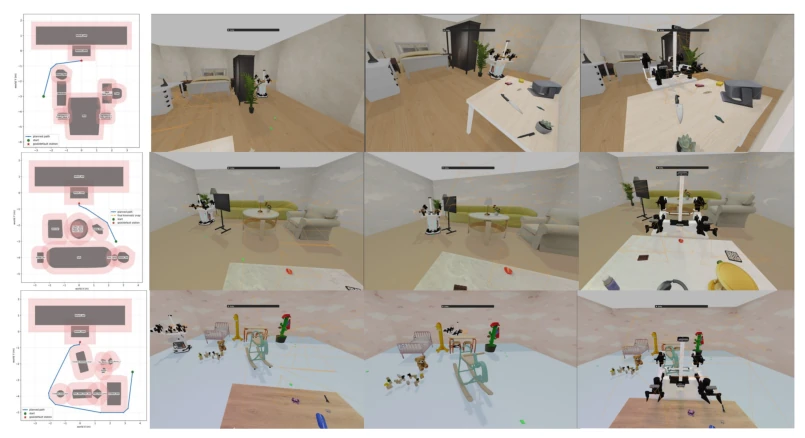
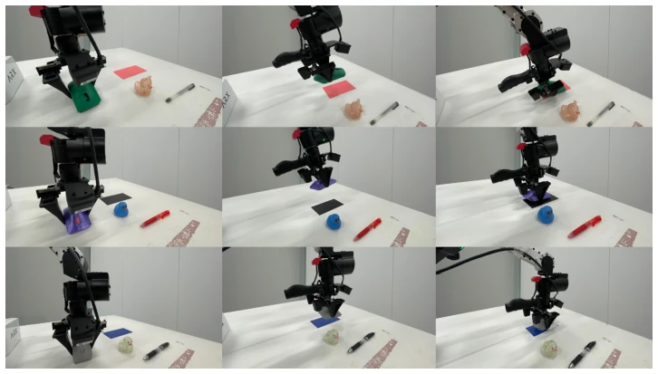

This paper opens a 'buffet' for dual-arm manipulation data generation. RoboCousin's core selling point is downgrading 'digital twins' to 'digital cousins', no longer obsessing over precise replication, but preserving semantics and function, allowing randomization. This move is quite smart, solving the problem of closed asset libraries in existing simulators (such as RoboTwin 2.0 [3]). However, reconstructing physical properties from a single RGB image and ensuring accurate collision geometry is essentially 'guessing', although CoT friction coefficient estimation and visual loop correction are added, the hallucination risk still exists. Dataset release is a highlight, 1 million trajectories sounds impressive, but whether the real transfer effect can truly cover long-tail scenarios depends on the follow-up. Overall, this is a very practical engineering solution, but theoretical depth is slightly insufficient, and it relies on the RoboTwin 2.0 foundation, raising doubts about independence.
Dual-arm manipulation requires massive diverse data, but physical collection is too expensive and slow. Existing simulation schemes (such as RoboTwin 2.0 [3]) can generate trajectories, but rely on closed asset libraries, adding new objects requires manual reconstruction of geometry and physical properties, poor scalability. Digital twins have high costs and narrow distribution, Digital Cousins [5] provide a compromise solution, but lack automated construction tools. This paper aims to solve the pain point of 'the simulation world itself is not scalable', allowing users to input observations to generate interactive assets, rather than just accelerating rollout within fixed scenes. This directly responds to the VLA model's needs for data scale and coverage [8]. If assets cannot be automatically expanded, simply increasing the number of trajectories is just 'finding new roads on old maps', unable to improve the generalization ability of the policy.
The overall flow is Real-to-Sim asset generation -> Digital Cousins construction -> Navigation and trajectory collection. 1. Digitalize Anything: Utilize SAM segmentation, 3DGS reconstruction of geometry and texture, LLM inference of physical properties (mass, friction), and auto-generate grasp contact points (OBB/Mixed strategy). 2. Digital Cousins: Preserve task semantic relationships (e.g., stacking), randomize object instances and backgrounds, divided into desktop and background two dimensions. 3. Navigation Integration: Utilize scene JSON layout to generate navigation map, support navigation from any room position to desktop operation position, expand spatiotemporal diversity. 4. User Interface: Provide interactive multi-mode pipeline, support asset center, desktop cousins, and scene-level mobile manipulation three modes, achieve human-in-loop verification. Specifically, the system improves physical parameter consistency through CoT-style converter, adopting 8-level standardized friction scale. Navigation part uses A* algorithm to plan path, and staged stops to ensure arm controller compatibility, visual loop step corrects scale hallucination.

Figure 2: RoboCousin Pipeline. We illustrate the overall RoboCousin pipeline in Fig. 2. The framework begins with a 3D property generation module that leverages 3D object reconstruction models, 3D Gaussian Splatting (3DGS), and large language models (LLMs) to automatically synthesize interactable objects and background environments from images. This module serves as the foundation for constructing a large-scale object–background asset library, enabling the digitization of user-defined instances across any object categories and workplace environments.

Figure 3: 3D Asset Generation Pipeline

Figure 4: Contact Point Automated Generation Pipeline

Figure 5: Visualization of generated 3D household scenes

Figure 6: Visualization of randomization of tabletop cousins

Figure 7: Representative navigation-augmented trajectories in three generated RoboCousin envi- ronments. Each row shows a top-down planning result followed by simulation frames along the corresponding route.
Released RoboCousin-OBD dataset (3000+ objects, 50 backgrounds). Baseline comparison RoboTwin 2.0 assets and single-scene digital twins. Metric is real robot (ARX AC-One) task success rate. Results show: Auto contact point success rate 76% better than manual annotation 72%; Generated assets on Pick Up Bottle task success rate from 40% increased to 80%; Digital Cousins training on Glasses Case grasp task from 0% increased to 55%, better than single-scene twin. Validated the effectiveness of automated assets and scene randomization. Experiments also show, desktop cousins still competitive on long tasks, proving the importance of semantic preservation.

Figure 9: Real-world evaluation on ARX AC-One. The snapshot shows the bimanual robot performing the place mouse pad task.